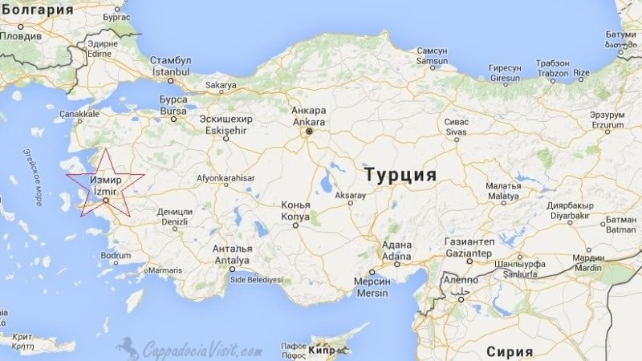
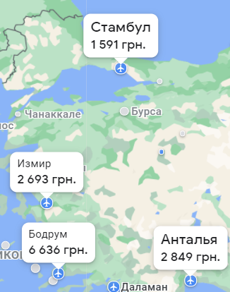
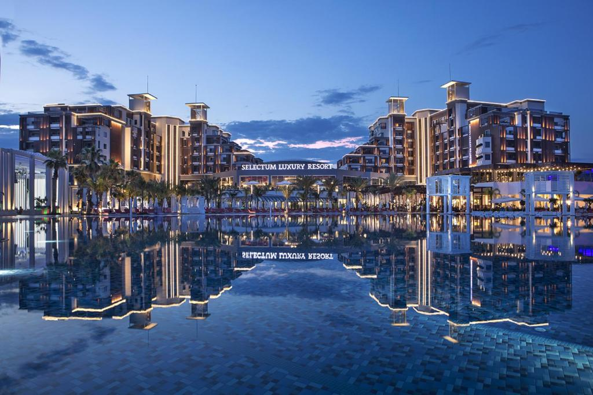
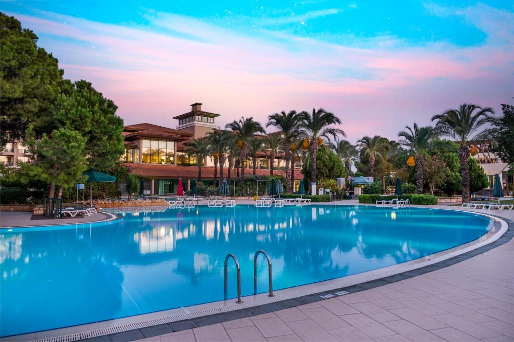
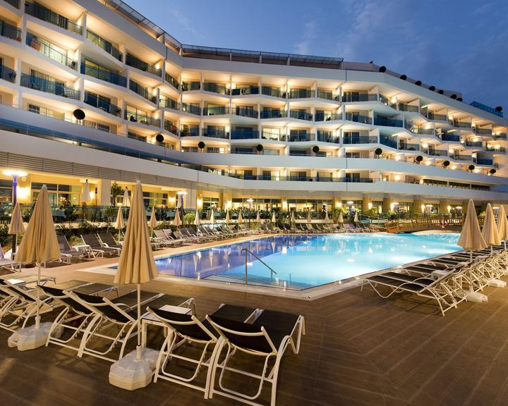

Головна |
До Турції |
Про країну |
Розваги |
Культура |
Турція - трансконтинентальна держава, розташована переважно на Анатолійському півострові в Західній Азії, з меншою частиною своєї території на Балканському півострові в Південно-Східній Європі. Східна Фракія, європейська частина Туреччини, відокремлена від Анатолії Мармуровим морем, Босфором і Дарданеллами (спільно відомі, як Турецькі/Чорноморські протоки). Стамбул, розташований водночас у Європі та Азії, є найбільшим містом країни, у той час, як Анкара — столицею. Туреччина на своєму північному заході межує з Грецією та Болгарією; на півночі омивається Чорним морем; на північному сході — з Грузією; на сході — з Вірменією, азербайджанським ексклавом Нахічеван та Іраном; на південному сході — з Іраком та Сирією; на півдні омивається Середземним морем; і на заході — Егейським морем. Близько 70-80 відсотків громадян країни самоідентифікують себе, як турки, у той час як курди є найбільшою національною меншиною, яка становить 15-20 відсотків населення країни. |  |
Як дістатися до Турції
Авіарейси Харків – ТурціяСтамбул(від 1 591 грн.)Без пересадок 9 год 48 хв Анталья(від 2 693 грн.)1 и більше пересадок 12 год 15 хв Измир(від 2 849 грн.)1 и більше пересадок 14 год 18 хв |
 |
Готелі в Турції
 |
Royal Holiday PalaceЦей розкішний курортний комплекс у будівлі-палаці розташований біля пляжу на березі Середземного моря, за 15 км від аеропорту Анталья та за 21 км від центру Анталії. Розкішний пляжний готель із 7 ресторанами, 9 барами, спа-салоном, критим та відкритими басейнами. |
|  | Selectum Luxury ResortЦей розкішний курортний готель "все включено" розташований на спокійному пляжі біля Егейського моря, за 6 км від парку розваг Land of Legends і за 8 км від гольф-клубу Cornelia. Розкішний курортний готель "все включено" з ресторанами, спа, відкритим басейном та прямим виходом на пляж. |
|  | IC Hotels Green PalaceЦей елітний готель "все включено" розташований на березі Середземного моря, в 16 км від аеропорту Анталья і в 28 км від міського центру Анталії. Елітний пляжний готель "все включено" з розкішними номерами, 7 басейнами, балійським спа та видами на море. |
|  | Selene Beach & SPA HotelУ номерах є вітальня, кухня та ванна кімната. Зручне планування кімнат та тераса у більшості номерів. У номерах є вітальня, кухня та ванна кімната. Зручне планування кімнат та тераса у більшості номерів. Килимове покриття створює затишок. Гості можуть користуватися сейфом, міні-баром та письмовим столом. |
Головна |
До Турції |
Про країну |
Розваги |
Культура |